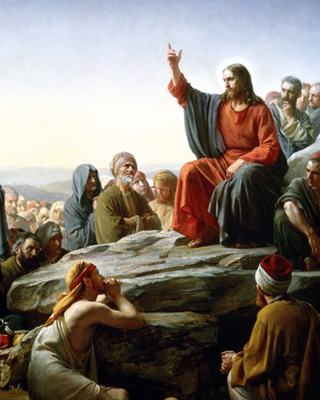

4. 5. |
|
The Baptism of Jesus |
| Then Jesus came from Galilee to the Jordan to be baptized by John. But John tried to deter Him, saying, "I need to be baptized by you, and do you come to me?"
Jesus replied, "Let it be so now; it is proper for us to do this to fulfill all righteousness." Then John consented. The Baptism in the Jordan is first of all a mystery of light. Here, as Christ descends into the waters, the innocent one who became "sin" for our sake (cf. 2Cor 5:21), the heavens open wide and the voice of the Father declares Him the beloved Son (cf. Mt 3:17 and parallels), while the Spirit descends on Him to invest Him with the mission which he is to carry out. |
|
The Wedding of Cana |
| On the third day a wedding took place at Cana in Galilee. Jesus' mother was there, and Jesus and His disciples had also been invited to the wedding. When the wine was gone, Jesus' mother said to Him, "They have no more wine."
"Dear woman, why do you involve me?" Jesus replied, "My time has not yet come." Mary goes to visit Elisabeth: She carries God to Her cousin, for the love of Her brothers and neighbours. Lord help us to carry Christ to others, like Mary did. Let us ask Mary the gift of burning charity. |
|
The Proclamation of the Kingdom of God |
|  |
| "The time has come," he said. "The kingdom of God is near. Repent and believe the good news!" (Mk 1,15) The preaching by which Jesus proclaims the coming of the Kingdom of God, calls to conversion (cf. Mk 1:15) and forgives the sins of all who draw near to Him in humble trust (cf. Mk 2:3-13; Lk 7:47- 48): the inauguration of that ministry of mercy which he continues to exercise until the end of the world, particularly through the Sacrament of Reconciliation which he has entrusted to His Church (cf. Jn 20:22-23). |
|
The Transfiguration |
| About eight days after Jesus said this, he took Peter, John and James with Him and went up onto a mountain to pray. As he was praying, the appearance of His face changed, and His clothes became as bright as a flash of lightning. Two men, Moses and Elijah, appeared in glorious splendor, talking with Jesus. They spoke about His departure, which he was about to bring to fulfillment at Jerusalem. Peter and His companions were very sleepy, but when they became fully awake, they saw His glory and the two men standing with Him. As the men were leaving Jesus, Peter said to Him, "Master, it is good for us to be here. Let us put up three shelters--one for you, one for Moses and one for Elijah." (He did not know what he was saying.)
The mystery of light par excellence is the Transfiguration, traditionally believed to have taken place on Mount Tabor. The glory of the Godhead shines forth from the face of Christ as the Father commands the astonished Apostles to “listen to Him” (cf. Lk 9:35 and parallels) and to prepare to experience with Him the agony of the Passion, so as to come with Him to the joy of the Resurrection and a life transfigured by the Holy Spirit. |
|
The Institution of the Eucharist |
| While they were eating, Jesus took bread, gave thanks and broke it, and gave it to His disciples, saying, "Take it; this is my body." A final mystery of light is the institution of the Eucharist, in which Christ offers His body and blood as food under the signs of bread and wine, and testifies "to the end" His love for humanity (Jn 13:1), for whose salvation he will offer Himself in sacrifice. |
|
|